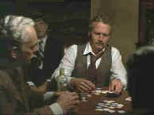

|
Sting,The/A,B+ |
|
Universal/1973/129m/FS
1.33 |
The
movie is as smooth as the beautifully plotted con of the title. Director George Roy Hill
works from a sterling screenplay by David S. Ward. You can sense a synch between the
writer and director. Hill's pacing is perfect. From phase to phase The Sting
moves swiftly in precisely executed strokes to its very satisfying conclusion.
When Johnny Hooker mistakenly pulls a small con on a mob money
runner, his partner Luther is killed in retribution. Johnny takes it on the lam in search
of big con specialist Henry Gondorff. Hooker wants to get even for Luther's death and the
big con seems the way to go. Gondorff is the only sting artist around who's good enough to
pull it off. Gondorff can't resist the lure and before you can say Doyle
Lonnegan (the
mark), the partners begin to set up The Sting.
 |
Gondorff plays the
mark. ©Universal |
Stars Paul Newman and Robert Redford are teamed again under
George Roy Hill's direction after the trio's success with Butch Cassidy and the
Sundance Kid. This time the perfection of script marries with terrific star power in
creating a screen classic. Newman is a great Henry Gondorff. His drunk scenes when he
sucks Lonnegan into the con during a railroad card game are a masterful combination of
comic and straight acting. Redford has just the right measure of innocence to make Johnny
Hooker special. Robert Shaw invests Doyle Lonnegan with blown up self importance and a
short fuse ever about ignite. Hill works splendidly with the large cast, getting the best
from all of them.
The rag time music of Scott Joplin as interpreted by Marvin
Hamlisch accompanies the action with a charm that emphasizes the era 1920's era of the
film. The inspiration for the scene cards setting separating each phase of the movie adds
to the overall delight.
The Sting turns out to be an excellent DVD after the first title cards seem far
too grainy. It's certainly the best quality video I've seen of this wonderful film. The
colors are brighter than ever on video and depth of detail is excellent. The 2-channel
mono Dolby Digital sound is clear and all the sharp dialogue is cleanly delivered.
|
|
The
Feature
Archive has articles ranging from John
Ford to Blonde
Bimbos, The
Heistmasters, Akira
Kurosawa and Frank
Darabont.

Click on the image above to learn more about the
effect of an actor's voice on his screen
persona.
Check out the Movie
Poster Archive for short bios and
images of Susan Hayward, Kirk Douglas, Katharine
Hepburn and many more. This month's featured star
is Clark
Gable. |
|
Imaging
Science Foundation
The Imaging Science Foundation
promotes proper standards in home theater viewing.
ISF trained technicians offer monitor calibration
services to consumers. The difference in a
properly calibrated monitor can be astounding. Click
on the image to find an ISF member near you. |
|
HOT
LINKS
DVD
Verdict
They
may be judgmental, but that's the point, isn't it.
Lots of DVD reviews plus news and more
The
Home Theater Forum
Looking
for lively and helpful exchanges on home theater,
DVD, movies. Visit this friendly site and get a
hardy welcome. |
|
Home Theater Reference
Reviewing System
When you read a DVD review it's of utmost importance to
know what equipment is being used to evaluate quality.
Click on the projectors to find out more. |
|